Только самое важное для устойчивого психологического состояния
Мы убрали лишнее и оставили функции, которые реально помогают: быстро понять состояние, получить поддержку в моменте и закрепить результат в повседневной жизни.

Статистика и мониторинг состояния
Главный экран — живой пульс вашего психологического состояния. За 3–5 минут вы получаете понятную оценку уровня стресса и тревоги без медицинских терминов и сложных шкал.
- Оценка состояния за несколько минут
- Персональный план действий на сегодня
- Динамика прогресса по неделям

Ассистент психологического благополучия 24/7
Когда сложно собраться с мыслями — напишите. Ассистент помогает разложить ситуацию по шагам, снизить напряжение и найти следующий полезный шаг. Работает круглосуточно и помнит контекст.
- Поддержка в момент тревоги
- Персональные ответы с учётом вашей истории
- Маршрутизация к специалисту при необходимости
- Данные только в России (ФЗ-152), не используются для обучения ИИ
- Не обычный чат GPT — специализация на ментальном здоровье и кризисных протоколах

Библиотека практик
50+ валидированных упражнений на 2–10 минут: дыхание, когнитивные техники, заземление и релаксация. Иссея подбирает практики под ваше текущее состояние, а не выдаёт шаблонные советы.
- Подбор по уровню стресса и контексту дня
- Методология КПТ, адаптированная для цифры
- Результат ощутим уже после первой сессии

Дневник и аналитика прогресса
Дневник помогает понять, какие события и привычки усиливают стресс, а какие — возвращают устойчивость. Визуальная аналитика показывает, что именно работает для вас, чтобы вы не действовали наугад.
- Тренд тревоги и стресса по неделям
- Трекер регулярности практик
- Эффективность упражнений именно для вас

Консультации со специалистом
Иссея не заменяет психолога. Если состояние требует очной поддержки — приложение быстро направит к подходящему специалисту и поможет подготовиться к встрече, чтобы она была максимально полезной.
- Контакты психологических служб вузов
- Переход к проверенным специалистам
- Экстренные линии психологической поддержки